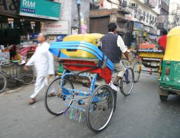
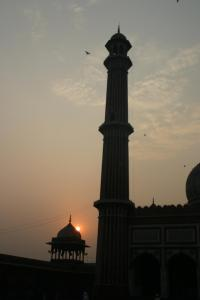

Le 26 novembre 2004,
Déjà le deuxième jour à Delhi. Nous venons à peine d’arriver, mais j’ai reçu tellement d’informations nouvelles ces dernières 24 heures que j’ai vraiment l’impression d’être là depuis bien plus longtemps. Tous mes sens ont eu le droit à une nouvelle renaissance.
 L’ouie, avec le vacarme incessant des rickshaws (sortes de taxis sans porte avec un moteur de mobylette) et des klaxons en tous genres (moins agressifs qu’a Paris, mais beaucoup plus présents), avec aussi la musique indienne parfois diffusée dans les rues a travers des haut-parleurs, sans oublier le brouhaha des comptables de l’hôtel, installés dans une chambre collée à la notre.
La vue, avec la fourmilière humaine qui déferle dans les rues et la gare, mêlant des mendiants en haillons (moins nombreux que je ne pensais, pour l’instant ...) et des femmes vêtues de magnifiques saris multicolores qui me font l’effet de princesses exotiques des temps anciens !
L’odorat, avec, dans les rues, ce mélange indescriptible de senteurs : celles des déchets qui jonchent les trottoirs, de la nourriture qui émanent de cuisines ambulantes, mais surtout celles des gaz d’échappement qui font de Delhi une des villes les plus polluées au monde.
 Le goût, avec la découverte de mille et une épices pour le plaisir du palais, mais aussi avec la bière indienne !
Le toucher, avec le vent qui défile sur mon visage pendant un trajet en rickshaw, dans lequel nous nous sentons aussi en sécurité qu’en traversant une autoroute à vélo. Avec la gorge irritée par la pollution ambiante, mais avec aussi cette famille indienne rencontrée dans les jardins du Fort Rouge, qui nous demande de poser sur une photo avec eux et qui nous enlace les épaules pour l’occasion !
Pour l’instant, je ne sais que penser. Comme je crois que nous n’avons encore rien vu de ce pays, je préfère attendre encore pour analyser mes sentiments.
Michaël
Salut cousin,cousine. Super on s’y croirait. J’espère que vous aurez l’occasion d’enrichir encore votre carnet de route pour que nous puissons en profiter. A propos, comment est la nourriture ? Je vous conseil a vous 2 le Sharas,excellent produit indien (oups, ca se mange ca ? :=)
Gros bisous.
Pat et Camille
{kind=link}
{kind=link}